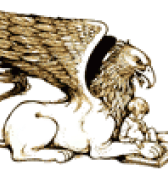
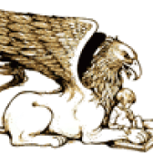

YEAR OF THE JUNGLE
A PUBLISHERS WEEKLY BEST BOOK OF 2013: PICTURE BOOK
65TH ANNUAL CHRISTOPHER AWARD FOR BOOKS FOR YOUNG PEOPLE
2014 CAPITOL CHOICES NOTEWORTHY TITLES FOR CHILDREN AND TEENS
A BOOKLIST EDITORS' CHOICE, 2013
2014 CHARLOTTE ZOLOTOW AWARD / HONOR BOOK
A NEW YORK TIMES EDITORS' CHOICE
A BULLETIN OF THE CENTER FOR CHILDREN'S BOOKS BLUE RIBBON BOOK FOR 2013
A 2014 GRYPHON HONOR BOOK
CCBC CHOICES 2014
BOOK LINKS LASTING CONNECTION FOR 2013
HUFFINGTON POST BEST PICTURE BOOKS OF 2013
MOST POWERFUL--HONORABLE MENTIONTHE GUARDIAN/THE OBSERVER BEST PICTURE BOOKS FOR CHILDREN, 2013
A PARENTS' CHOICE SILVER HONOR AWARD RECIPIENT 2013
OPPENHEIM TOY PORTFOLIO PLATINUM AWARD WINNER 2013
 



"In this picture book, Collins sensitively examines the impact of war on the very young, using her own family history as a template. Suzy is the youngest of four children—Proimos draws her with impossibly big, questioning blue eyes and a mass of frizzy red hair—and she is struggling to understand the changes in her family. "My dad has to go to something called a war," she explains. "It's in a place called Viet Nam. Where is Viet Nam? He will be gone a year. How long is a year? I don't know what anybody's talking about."...
Read entire >>--Publishers Weekly, STARRED REVIEW